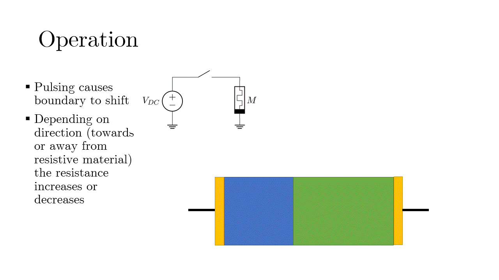
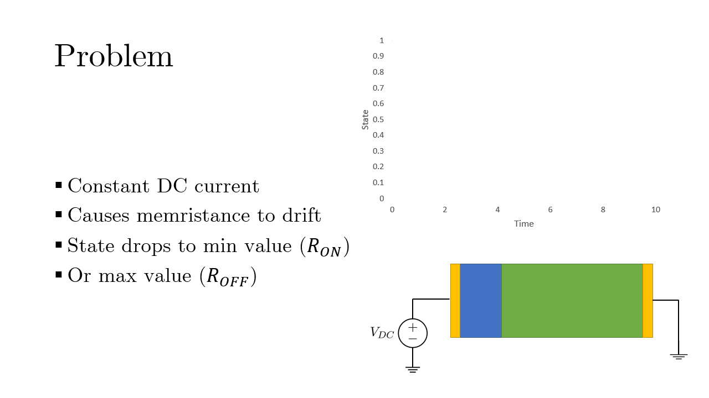
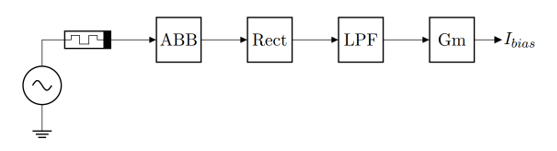
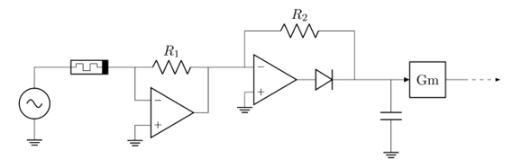
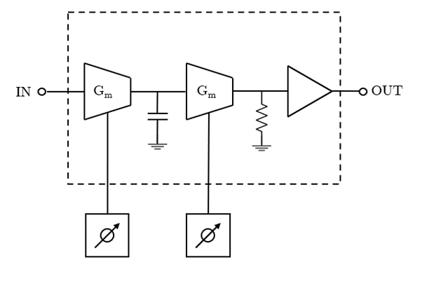

Memristors & Reconfigurable Analogue Filters (Thesis)
What are Memristors?
Memristors have the following properties:
- Fundamental, Two terminal devices
- Relates flux and charge: dφ = M ⋅ dq
- Passive: P(t) = I(t) ⋅ V(t) = I2(t)⋅ M(q(t))
- Analogue - Time dependent, time varying
- Non-linear
- Stimuli dependent - the present state depends on the previous state
How do they operate?
Short pulses across the device causes the interface between the doped layers to move and thus the memristance to change.
Problem?
When a constant DC current is applied - such as in a biased circuit - the interface between the doped layers is displaced towards one side, driven by the directional flow of charge carriers.
Memristor Programming Schemes
The following schemes are devised to enable incorporation of memristors into reconfigurable analogue filters. The first method attempts to implement memristors directly in the signal path. The second method implements a memristor in a "bias generation" block that outputs a bias current.
Method 1
The first programming method explored was using a balanced H-bridge with PWM pulsing of alternate switch pairs.

Memristor state (and therefore the "memristance") becomes a function of duty cycle. Adjusting the duty cycle moves the position of the boundary and increases or decreases the overal resistance.
Method 2
The second method exploits the operating principle of an inverting Op-amp where a virtual ground is created at the input terminals. This would remove the memristor from the signal path and prevent any interface drift due to it.
By rectifying and filtering the output of an Auto-Balancing Bridge (ABB), a bias current can be extracted.
By pulsing the memristor in a similar manner to method 1, the memristance can be adjusted thereby adjusting the bias current.
Incorporation into Reconfigurable Filters
Memristors can be incorporated into analogue filters by first using a programming scheme to create a programming block. This programming block can then be inorporated into a bias generation scheme to be used as a handle on a Transconductance based filter.
These bias generation blocks can then be used in reconfiugrable analogue filters like so:
The bias generation blocks can be used as handles on operational transconductance filters to tune the characteristics and achieve filters of desired characterstics.
Conclusion
It is possible to incorporate memristor technology into reconfigurable analogue filter technology.
However, memristor technology is an immature technology, still in its infancy and may see significant changes in how it is fabricated and functions. The present implementations of memristor technologt are not amenable to in-circuit use in biased circuits. The techniques presented above, to incorporate memristors into biased circuits are component intensive, complex and excessive. Existing methods using voltage control are much more convenient.